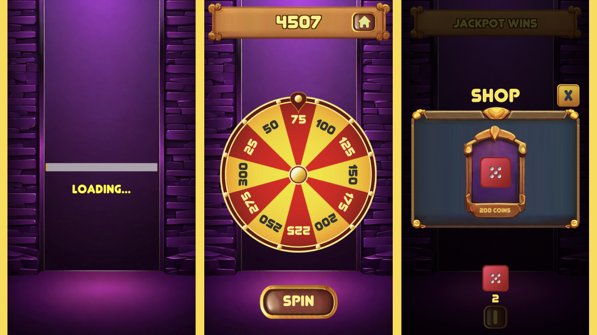
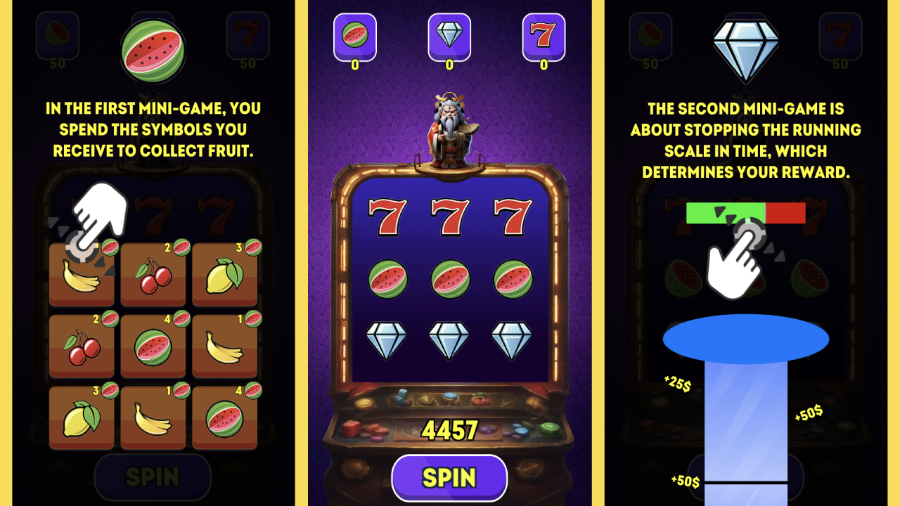

About the Game
A vibrant slot-machine game originally started for a client and later polished into a standalone portfolio showcase, featuring classic reel mechanics and a bonus mini-game.



A vibrant slot-machine game originally started for a client and later polished into a standalone portfolio showcase, featuring classic reel mechanics and a bonus mini-game.
Sole developer responsible for reel spin & win-line detection logic, bonus mini-game implementation, UI/UX design, and structuring a clean, modular C# codebase.